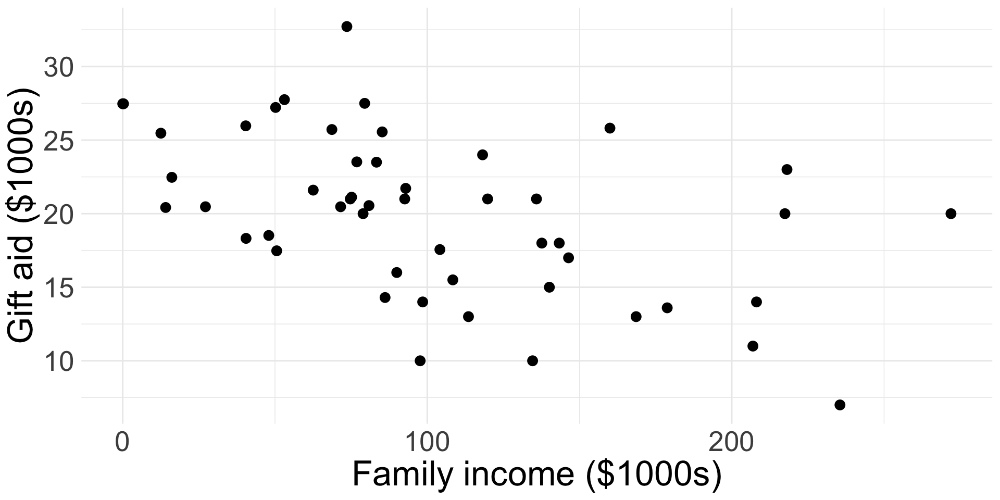
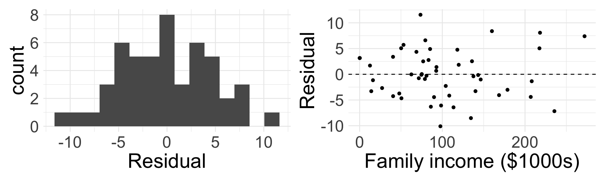
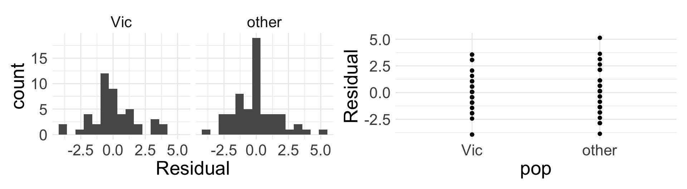

2025-11-12
\[ y = \beta_{0} + \beta_{1} x + \epsilon \]
\(\beta_{0}\) and \(\beta_{1}\) are population parameters and their corresponding point estimates \(b_{0}\) and \(b_{1}\) are estimated from the data
Fitted model: \(\hat{y} = b_{0} + b_{1}x\)
Residual: \(e_{i} = y_{i}-\hat{y}_{i}\)
LINE conditions: Linearity, Independence, Normal residuals, Equal variance
elmhurstThe elmhurst dataset from openintro provides a random sample of 50 students’ gift aid for students at Elmhurst College.
income of the student and the gift aid that student received (in $1000s)
Write down the linear regression model of interest, in context.
\[\text{gift aid} = \beta_{0} + \beta_{1} \text{income} + \epsilon\]
Are the first two conditions of LINE satisfied?
First obtain \(b_{1}\):
\[ b_{1} =\frac{s_{y}}{s_{x}} R \]
where:
\(s_{x}\) and \(s_{y}\) are the sample standard deviations of the explanatory and response variables
\(R\) is the sample correlation between \(x\) and \(y\)
Then obtain \(b_{0}\):
\[b_{0} = \bar{y} - b_{1} \bar{x}\] where
\(\bar{y}\) is the sample mean of the response variable
\(\bar{x}\) is the sample mean of the explanatory variable
Take STAT 0211 or 0311 to see where these formulas come from!
elmhurst model (by hand)Let’s obtain this coefficients by hand!
| variable | mean | s |
|---|---|---|
| family_income | 101.78 | 63.21 |
| gift_aid | 19.94 | 5.46 |
What does this value of \(R\) tell us?
Set-up the calculations:
\(b_{1} = \frac{s_{y}}{s_{x}} R\)
\(b_{0} = \bar{y} -b_{1} \bar{x}\)
\(b_{1} = \frac{5.461}{63.206} ( -0.499) = -0.043\)
\(b_{0} = 19.936 - (-0.043) 101.779 = 24.319\)
Write out the fitted model!
elmhurst model\[ \widehat{\text{gift aid}} = 24.319 -0.043 \times \text{family_income} \]

Do you believe the last two conditions of LINE are satisfied?
Assuming the SLR model is appropriate, interpreting the parameters (i.e. coefficients) is one of the most important steps in an analysis!
To interpret the estimate of the intercept \(b_{0}\), simply plug in \(x= 0\):
\[ \begin{align*} \hat{y} &= b_{0} + b_{1} x \\ &= b_{0} + b_{1}(0) \\ &= b_{0} \end{align*} \]
So, the intercept describes the estimated/expected value of the response variable \(y\) if \(x=0\)
Interpret the intercept in our elmhurst model
The intercept’s interpretation only makes sense when a value of \(x=0\) is plausible!
\[ \begin{align*} \hat{y}_{2} &= b_{0} + b_{1} (x + 1) \\ &= \color{orange}{b_{0} + b_{1}x} + b_{1} \\ &= \color{orange}{\hat{y}_{1}} + b_{1} \Rightarrow \\ b_{1} &= \hat{y}_{2} - \hat{y}_{1} \end{align*} \]
Interpretation of estimated slope \(b_{1}\): for a 1 unit increase in the explanatory variable \(x\), we expect the response variable \(y\) to change by \(b_{1}\) units
Interpret in context the estimated slope coefficient in the elmhurst model
RWe run the model in R, and the output looks something like this:
| term | estimate | std.error | statistic | p.value |
|---|---|---|---|---|
| (Intercept) | 24.319 | 1.291 | 18.831 | 0 |
| family_income | -0.043 | 0.011 | -3.985 | 0 |
The estimates \(b_{0}\) and \(b_{1}\) are shown in the second column
We can also easily add the fitted SLR line to a ggplot:
The estimates from the fitted model will always be imperfect
Do not try to use the model for \(x\) values beyond the range of the observed \(x\)!
The true relationship between \(x\) and \(y\) is almost always much more complex than our simple line
We do not know how the relationship behaves outside our limited window
Suppose we would like to use our fitted model to estimate the expected gift aid for someone whose family income is $1,000,000:
Find the estimated gift aid (careful with units)
This is an example of extrapolation: using the model to estimate values outside the scope of the original data
If we fit a model and determine LINE was met, we still need a way to describe how “good” the fit is!
Recall sample correlation \(R\) describes the linear relationship between variables \(x\) and \(y\)
We typically use the coefficient of determination or \(R^2\) (R-squared) to describe strength of linear fit of a model
It turns out that \(R^2\) in SLR is exactly … \(R\) squared (i.e. the square of the sample correlation)
What are the possible values of \(R^2\)? What are desirable values of \(R^2\)?
elmhurst model fitThe sample correlation between family income and aid is \(R=\) -0.499
So the coefficient of determination is \(R^2 = (-0.499)^2 = 0.249\)
gift aid received by the student is explained by family incomeI think this is actually a pretty good model!
Thus far, we have assumed that \(x\) is numerical. Now let \(x\) be categorical.
For now, assume that \(x\) is categorical with two levels
Running example: the possum data from openintro which has data representing possums in Australia and New Guinea
tail_l (tail length in cm)pop (either “Vic” for possums from Victoria or “other” for possums from New South Wales or Queensland)Maybe we would think to write our regression as
\[\text{tail length} = \beta_{0} + \beta_{1} \text{pop} + \epsilon\]
Why doesn’t this work?
We need a mechanism to convert the categorical levels into numerical form!
\[ \text{pop_other} = \begin{cases} 0 & \text{ if pop = Vic} \\ 1 & \text{ if pop = other} \end{cases} \]
| tail_l | pop | pop_other |
|---|---|---|
| 38.0 | other | 1 |
| 34.0 | Vic | 0 |
| 36.0 | Vic | 0 |
| 36.5 | Vic | 0 |
| 41.5 | other | 1 |
The level that corresponds to 0 is called the base level
Vic is the base levelpossum modelThis yields the now “legal” SLR model
\[\text{tail length} = \beta_{0} + \beta_{1} \text{pop_other} + \epsilon\]
R will automatically convert categorical variables to indicators! So our estimates are as follows:
| term | estimate | std.error | statistic | p.value |
|---|---|---|---|---|
| (Intercept) | 35.935 | 0.253 | 142.065 | 0 |
| popother | 1.927 | 0.339 | 5.690 | 0 |
Write out the equation of our fitted model
Our fitted model is:
\[\widehat{\text{tail length}} = 35.935 + 1.927 \times \text{pop_other}\]
What does \(\text{pop_other} = 0\) mean? That the possum is from Victoria!
So when \(x\) is categorical, the interpretation of \(b_{0}\) is the estimated value of the response variable for the base level of \(x\)
Interpretation: the expected tail length of possums from Victoria is 35.935 cm
\[\widehat{\text{tail length}} = 35.935 + 1.927\times \text{pop_other}\]
Remember, \(b_{1}\) is the expected change in \(y\) for a one unit increase in \(x\)
What does it mean for \(\text{pop_other}\) to increase by one unit here?
pop value of “Vic” to “other”When \(x\) is categorical, the interpretation of \(b_{1}\) is the expected change in \(y\) when moving from the base level to that non-base level
Try interpreting \(b_{1}\) in context!
When categorical \(x\) only has two levels, Linearity is always satisfied (yay!)
Independence condition is the same before
We need to evaluate Nearly normal residuals and Equal variance for each level

Are all four conditions for SLR met?
When \(x\) is categorical, mathematical meaning for \(b_{0}\) and \(b_{1}\) are the same as for numerical \(x\), but they have more specific/nuanced interpretations when placed in context
When \(x\) is categorical, SLR is a bit “overkill” (you’ll explore this in homework)